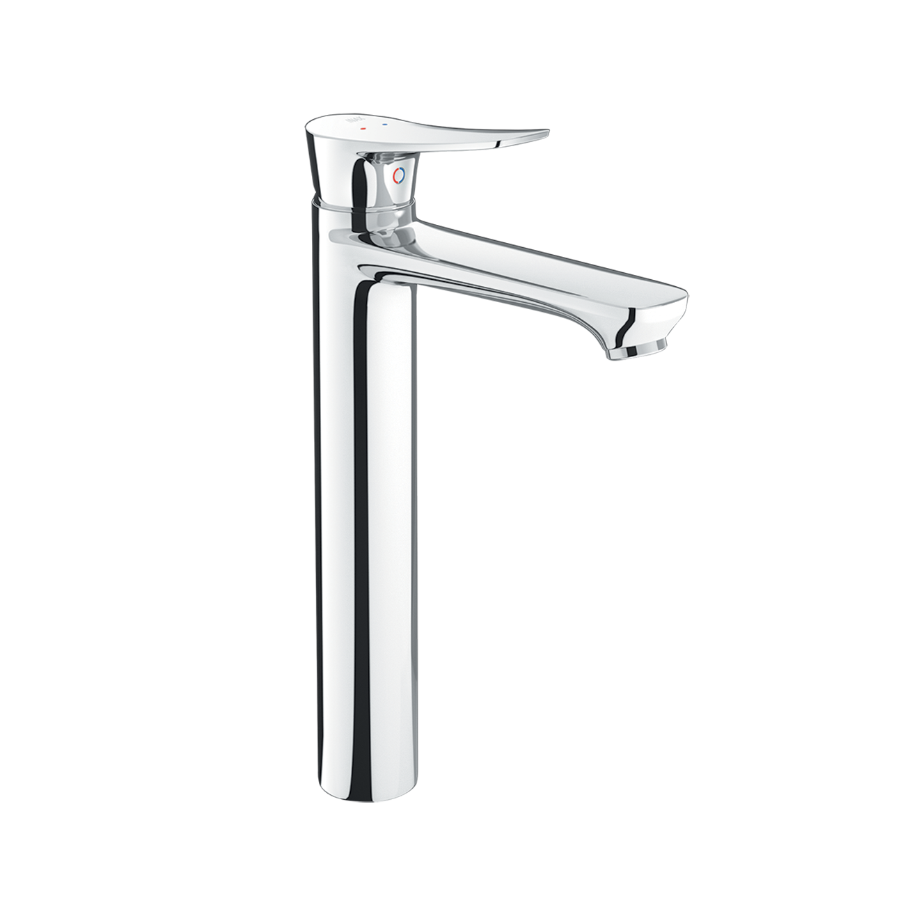
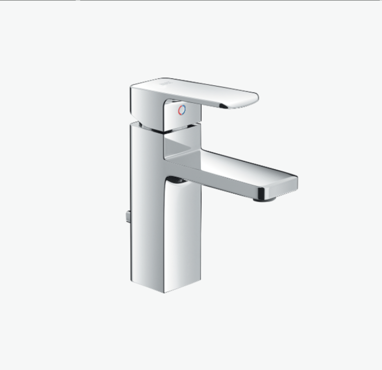
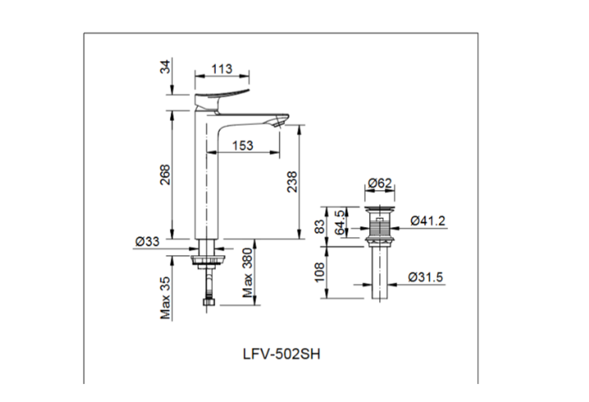

Trong mỗi căn nhà, phòng tắm hay khu vực vệ sinh không chỉ là nơi phục vụ nhu cầu hằng ngày mà còn thể hiện sự tinh tế trong lối sống của gia chủ. Một chiếc sen vòi chất lượng cao có thể mang đến trải nghiệm sử dụng thoải mái và tạo điểm nhấn cho không gian. Và sen vòi đơn LFV-502SH của thương hiệu INAX là một lựa chọn như vậy.Với thiết kế tối giản, độ bền ấn tượng và tính năng vận hành mượt mà, sản phẩm đáp ứng nhu cầu sử dụng lâu dài với mức chi phí hợp lý.Ưu điểm nổi bật của sen vòi LFV-502SHThiết kế gọn gàng, hiện đạiSen vòi đơn LFV-502SH sở hữu phong cách thiết kế tối giản nhưng tinh tế, dễ dàng kết hợp với nhiều kiểu nội thất khác nhau. Bề mặt mạ Crom-Niken sáng bóng vừa giúp không gian thêm sang trọng, vừa giữ được vẻ mới mẻ lâu dài mà không bị bong tróc hay xỉn màu theo thời gian.Chất liệu cao cấp, an toànSen vòi đơn LFV-502SH được hoàn thiện từ chất liệu đạt tiêu chuẩn quốc tế, trong đó lớp mạ Crom-Niken đóng vai trò chống ăn mòn, chống gỉ sét và tăng độ bền chắc. Việc lựa chọn vật liệu này không chỉ đảm bảo độ thẩm mỹ mà còn giúp sản phẩm hoạt động ổn định trong môi trường thường xuyên tiếp xúc với nước.Công nghệ van sứ tiên tiếnMột trong những điểm sáng của LFV-502SH chính là van điều khiển bằng sứ chất lượng cao. Van sứ nổi tiếng với độ bền vượt trội, khả năng chống rò rỉ và mài mòn, giúp dòng nước luôn ổn định và hạn chế sự cố hỏng hóc. Bạn có thể hoàn toàn yên tâm khi vận hành trong thời gian dài mà không lo lắng chi phí sửa chữa.Tiện lợi trong sử dụngLà vòi nước nóng lạnh, LFV-502SH cho phép người dùng dễ dàng điều chỉnh nhiệt độ nước phù hợp với nhu cầu: từ rửa tay, rửa mặt đến vệ sinh cá nhân. Tay gạt vận hành nhẹ nhàng, chỉ cần một thao tác đơn giản là có thể thay đổi lưu lượng hoặc nhiệt độ nước mong muốn.Độ bền vượt trội, giá thành hợp lýVới sự kết hợp giữa thiết kế chắc chắn và công nghệ tiên tiến, vòi lavabo LFV-502SH có thể duy trì tuổi thọ lâu dài mà vẫn mang đến hiệu suất cao. Điểm cộng lớn của loại vòi này là mức giá tiết kiệm so với nhiều dòng sản phẩm khác cùng phân khúc, giúp người dùng dễ dàng sở hữu mà không phải lo ngại về chi phí.Video giới thiệu vòi chậu INAXBản vẽ sen vòi đơn LFV-502SHThông số kỹ thuậtTên sản phẩmSen vòi đơn LFV-502SHDạngVòi chậu nóng lạnhChất liệuMạ Crom-NikenKích thước-Đặc điểm- Van điều khiển bằng sứ có độ bền cao, chống rò rỉ nướcThương hiệuINAXKhác- Hotline tư vấn và bảo hành: 18006633
Sen vòi đơn LFV-502SH
Vòi chậu thương hiệu INAX.
Đã cập nhật danh sách yêu thích.
DANH MỤC: Vòi chậu
MÃ SẢN PHẨM: LFV-502SH
DEPTH: mm
HEIGHT: mm
WIDTH: mm
Trong mỗi căn nhà, phòng tắm hay khu vực vệ sinh không chỉ là nơi phục vụ nhu cầu hằng ngày mà còn thể hiện sự tinh tế trong lối sống của gia chủ. Một chiếc sen vòi chất lượng cao có thể mang đến trải nghiệm sử dụng thoải mái và tạo điểm nhấn cho không gian. Và sen vòi đơn LFV-502SH của thương hiệu INAX là một lựa chọn như vậy.Với thiết kế tối giản, độ bền ấn tượng và tính năng vận hành mượt mà, sản phẩm đáp ứng nhu cầu sử dụng lâu dài với mức chi phí hợp lý.Ưu điểm nổi bật của sen vòi LFV-502SHThiết kế gọn gàng, hiện đạiSen vòi đơn LFV-502SH sở hữu phong cách thiết kế tối giản nhưng tinh tế, dễ dàng kết hợp với nhiều kiểu nội thất khác nhau. Bề mặt mạ Crom-Niken sáng bóng vừa giúp không gian thêm sang trọng, vừa giữ được vẻ mới mẻ lâu dài mà không bị bong tróc hay xỉn màu theo thời gian.Chất liệu cao cấp, an toànSen vòi đơn LFV-502SH được hoàn thiện từ chất liệu đạt tiêu chuẩn quốc tế, trong đó lớp mạ Crom-Niken đóng vai trò chống ăn mòn, chống gỉ sét và tăng độ bền chắc. Việc lựa chọn vật liệu này không chỉ đảm bảo độ thẩm mỹ mà còn giúp sản phẩm hoạt động ổn định trong môi trường thường xuyên tiếp xúc với nước.Công nghệ van sứ tiên tiếnMột trong những điểm sáng của LFV-502SH chính là van điều khiển bằng sứ chất lượng cao. Van sứ nổi tiếng với độ bền vượt trội, khả năng chống rò rỉ và mài mòn, giúp dòng nước luôn ổn định và hạn chế sự cố hỏng hóc. Bạn có thể hoàn toàn yên tâm khi vận hành trong thời gian dài mà không lo lắng chi phí sửa chữa.Tiện lợi trong sử dụngLà vòi nước nóng lạnh, LFV-502SH cho phép người dùng dễ dàng điều chỉnh nhiệt độ nước phù hợp với nhu cầu: từ rửa tay, rửa mặt đến vệ sinh cá nhân. Tay gạt vận hành nhẹ nhàng, chỉ cần một thao tác đơn giản là có thể thay đổi lưu lượng hoặc nhiệt độ nước mong muốn.Độ bền vượt trội, giá thành hợp lýVới sự kết hợp giữa thiết kế chắc chắn và công nghệ tiên tiến, vòi lavabo LFV-502SH có thể duy trì tuổi thọ lâu dài mà vẫn mang đến hiệu suất cao. Điểm cộng lớn của loại vòi này là mức giá tiết kiệm so với nhiều dòng sản phẩm khác cùng phân khúc, giúp người dùng dễ dàng sở hữu mà không phải lo ngại về chi phí.Video giới thiệu vòi chậu INAXBản vẽ sen vòi đơn LFV-502SHThông số kỹ thuậtTên sản phẩmSen vòi đơn LFV-502SHDạngVòi chậu nóng lạnhChất liệuMạ Crom-NikenKích thước-Đặc điểm- Van điều khiển bằng sứ có độ bền cao, chống rò rỉ nướcThương hiệuINAXKhác- Hotline tư vấn và bảo hành: 18006633
DANH MỤC: Vòi chậu
MÃ SẢN PHẨM: LFV-502SH
DEPTH: mm
HEIGHT: mm
WIDTH: mm